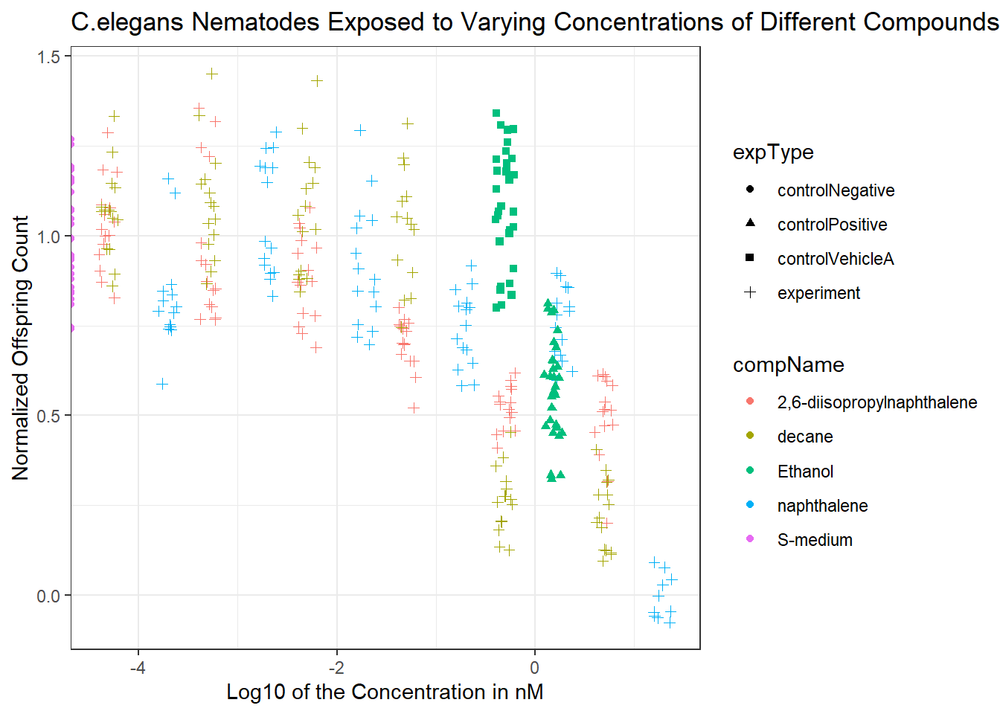

6 Naam van hoofdstuk
C: -
í
## ── Attaching core tidyverse packages ──────────────────────── tidyverse 2.0.0 ──
## ✔ dplyr 1.1.4 ✔ readr 2.1.5
## ✔ forcats 1.0.0 ✔ stringr 1.5.1
## ✔ lubridate 1.9.3 ✔ tibble 3.2.1
## ✔ purrr 1.0.2 ✔ tidyr 1.3.1
## ── Conflicts ────────────────────────────────────────── tidyverse_conflicts() ──
## ✖ dplyr::filter() masks stats::filter()
## ✖ dplyr::lag() masks stats::lag()
## ℹ Use the conflicted package (<http://conflicted.r-lib.org/>) to force all conflicts to become errorslibrary(dplyr)
# Change compName and expType into factors
flow_tidy$compName <- as.factor(flow_tidy$compName)
flow_tidy$expType <- as.factor(flow_tidy$expType)
# Change compConcentration into numeric column
flow_tidy$compConcentration <- as.numeric(flow_tidy$compConcentration)## Warning: NAs introduced by coercion# Remove unnecessary columns
flow_tidy$plateRow <- NULL
flow_tidy$plateColumn <- NULL
# Filter out invalid rows (NA or zero values in RawData or compConcentration)
flow_tidy <- flow_tidy %>%
filter(!is.na(RawData),
!is.na(compConcentration),
compConcentration > 0)
# Check if controlNegative is present
print(unique(flow_tidy$expType))## [1] experiment controlPositive controlVehicleA
## Levels: controlNegative controlPositive controlVehicleA experiment# Mean of controlNegative for normalization
control_negative_mean <- mean(flow_tidy$RawData[flow_tidy$expType == "controlNegative"], na.rm = TRUE)
# Check if control_negative_mean is calculated correctly
print(control_negative_mean)## [1] NaN# Add NormalizedData column (avoid division by zero)
flow_tidy <- flow_tidy %>%
mutate(NormalizedData = ifelse(control_negative_mean != 0, RawData / control_negative_mean, NA))
# Calculate log10 of compConcentration (avoid log(0) issues)
flow_tidy <- flow_tidy %>%
mutate(logConcentration = ifelse(compConcentration > 0, log10(compConcentration), NA))
# Check for any remaining NAs
print(sum(is.na(flow_tidy$NormalizedData)))## [1] 324## [1] 0# Plot the data
flow_tidy_plot <- flow_tidy %>%
ggplot(aes(x = logConcentration, y = NormalizedData,
colour = compName, shape = expType)) +
geom_jitter() +
theme_bw() +
labs(
title = "C.elegans nematodes exposed to varying concentrations of different compounds",
x = "Log10 of the concentration in nM",
y = "Normalized offspring count"
)
print(flow_tidy_plot)
library(ggplot2)
library(tidyverse)
library(dplyr)
# Change compname and exptype into factors
flow_tidy$compName <- as.factor(flow_tidy$compName)
flow_tidy$expType <- as.factor(flow_tidy$expType)
# Change compconcentration into numeric column.
flow_tidy$compConcentration <- as.numeric(flow_tidy$compConcentration)
# Remove rows with NA
flow_tidy$plateRow <- NULL
flow_tidy$plateColumn <- NULL
# Mean of control negative for normalization of data
control_negative_mean <- mean(flow_tidy$RawData[flow_tidy$expType == "controlNegative"], na.rm = TRUE)
# New column with normalized data
flow_tidy <- flow_tidy %>%
mutate(NormalizedData = RawData / control_negative_mean)
#take the log10 value of the compConcentration
flow_tidy$logConcentration <- log(flow_tidy$compConcentration, base = 10)
# Plot the data
flow_tidy_plot <- flow_tidy %>% ggplot(aes(x= logConcentration, y= NormalizedData,
colour= compName, shape = expType)) +
geom_jitter() +
theme_bw() +
labs(
title = "C.elegans nematodes exposed to varying concentrations of different compounds",
x= "Log10 of the concentration in nM",
y= "Normalized offspring count")
print(flow_tidy_plot)## Warning in min(x): no non-missing arguments to min; returning Inf## Warning in max(x): no non-missing arguments to max; returning -Inf## Warning in min(d[d > tolerance]): no non-missing arguments to min; returning
## Inf## Warning in min(x): no non-missing arguments to min; returning Inf## Warning in max(x): no non-missing arguments to max; returning -Inf## Warning in stats::runif(length(x), -amount, amount): NAs produced## Warning: Removed 324 rows containing missing values or values outside the scale range
## (`geom_point()`).
RawData is of the class ‘numeric’ and compName is ‘character’ which are both correct. CompConcentration is also of the class ‘character’ which is not correct, it should be numerical.
The concentration of the compounds has a wide range which isn’t good for visualisation in the scatterplot. To solve this problem, the log10 value of the compConcentration is used to make the scatterplot to reduce the datapoint being very far apart. Another problem could be that the Compconcentration is of the class “character” which disrupts the order in which the data is displayed.
- The positive control for this experiments is Ethanol. (H) The negative control for this experiment is S-medium.
6.1 Analyzing the data
If this experiment is analyzed to determine if there is an effect of different concentrations on offspring count and whether the compounds have varying effects, the following steps should be followed:
Preparation of the Data: First, the data should be imported from the Excel file into RStudio to prepare it for analysis. During this process, columns should be assigned the correct data types, NA values should be removed, and the data should be normalized. Specifically, normalization should ensure that the mean value of the negative control is equal to 1, with all other values expressed as fractions of the negative control. This step is essential for comparing the effects of different compounds consistently.
Visualization of the Data with a Scatterplot: This step is important for identifying potential issues with the data and making any necessary adjustments. It allows you to visualize the relationship between compound concentrations and offspring count. Use the compound concentration on the X-axis and the offspring count (RawData) on the Y-axis, with different colors representing each compound and different shapes representing the experimental types. Jitter can be applied to prevent overlapping data points.
Dose-Response Curve (DRC): To better analyze the effects of the compounds on C. elegans and assess the relationship between dose and response, a DRC is necessary. This involves fitting a dose-response model using the {drc} package in R. Use the log-transformed compound concentration on the X-axis and the offspring count (RawData) on the Y-axis. The DRC will help quantify key parameters such as the IC50 value, as well as the minimal and maximal response levels.
Analysis/Conclusion of the DRC: The analysis should focus on determining the IC50 value for each compound, identifying the minimal and maximal concentrations affecting C. elegans, and comparing the dose-response curves to evaluate differences in compound effects. Controls should be used to validate the experimental results.
J Normalize the data for the controlNegative in such a way that the mean value for controlNegative is exactly equal to 1 and that all other values are expressed as a fraction thereof. Rerun your graphs with the normalized data.
K Why would you want to take the step under J?